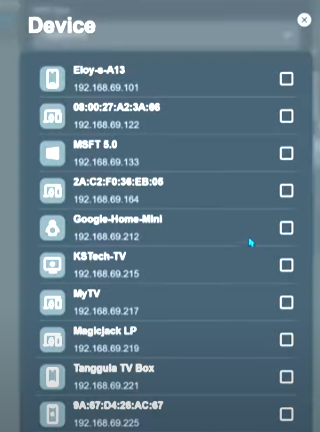
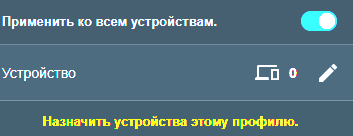

Беспроводной роутер: Asus RT-AX82U
Версия прошивки: 3.0.0.4.388_24232
Здравствуйте!
Не могу настроить раздачу VPN на конкретные устройства.
Вот тут у индуса галочки напротив устройств активные (на 4 мин 17 сек):

а у меня они не активные:
{kind=link}
Конфигурации VPN стирались, добавлялись заново, пробовались другие VPN, роутер сбрасывался, были попытки заходить в настройки роутера с разных браузеров, устройств и через приложение Asus Router - галочки не активны. Пока приходится держать переключатель в положении Применить ко всем устройствам, что не есть хорошо:

Поддержка Asus, кроме как совета сбросить в дефолт, ничего дать не может. А это уже было сделано.
Может какая хитрость нужна?
Возможно дело в версии прошивки, попробуйте обновить или откатить. А лучше поставить openwrt.
Версий прошивок было несколько, с момента покупки. Выбрать устройства нельзя было на всех. А с OpenWRT были негативные опыты, так что особо больше не хочется…
Предполагаю, что галочка появляется только для VPN, перенаправляющих весь трафик.
А вы можете регулировать VPN путем выдачи провайдерского или антизапретского DNS через DHCP отдельным клиентам.
Если не сложно, подскажите поподробнее, к стыду своему, не понимаю я, как это сделать…
Во-первых, поскольку через АнтиЗапрет идёт не весь трафик, а лишь трафик до заблокированных ресурсов, то особого вреда от того, что это будет распространяться на все устройства, нет.
Если, всё же, вам действительно нужно, чтобы для некоторых клиентов обход блокировок не работал, скажите, что произойдёт, если переключатель “Применить ко всем устройствам” отключить? Отключите его и проверьте на клиентах, открываются ли заблокированные сайты.
Это глюк или кривая фича прошивок от Asus.
Когда устройства прописаны/добавленны в каком-либо другой VPN профиль, то больше их никуда добавить не получиться пока их не удалите там где они сайчас добавлены. Показываться в других профилях они будут именно с серой галкой.
Проверьте не только другие VPN профили, но и раздел “Подключение”
.
Спасибо! Недавно дошло это до меня, хотел стереть тему, но прав на это у меня нет 
Правда немножко у меня по другому было - но суть примерно та же. Не ожидалось такого…